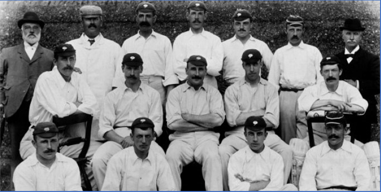
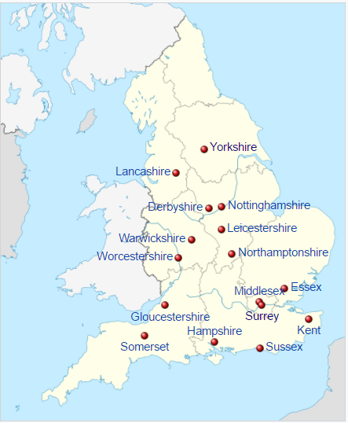
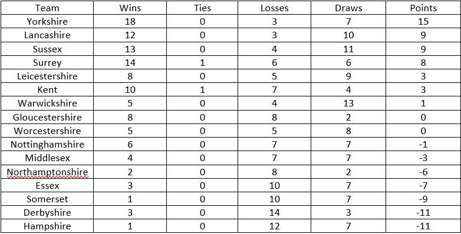

The Egyptian Gazette provides insight to the lives of people living in Alexandria, Egypt in the early 20th century. An activity of importance to these people is sports, particularly the sport of cricket, with weekly updates of game results. The 1905 home cricket season is documented in the Egyptian Gazette, which normally includes a small “Sport and Play” section usually on the third page of each Monday edition dedicated to reporting on a number of sports including cricket. A reading of this section over the 1905 editions of the Egyptian Gazette provides a description of the teams and players participating in the 1905 County Championship.
The League
After a reading of the home cricket sections of the 1905 editions of the Egyptian Gazette, the home cricket league, which is referred to as the “County Championship”, began in the spring and ended in the fall, which the first game being documented on 27 April and the last on 1 September. There are no playoffs, the champion is simply the team with the most “points” at the end of the season. A point is gained for a win, and taken away for a loss, with ties and draws having no effect. The type of cricket played is referred to as “First-class cricket”, which means that matches last at least three days and explaining the large margin of victories, often over 200 runs. The County Championship is based in England and Wales, and is reported on in the Egyptian Gazette as entertainment for the British forces occupying Egypt during this time.
Upon further research of the County Championship, the league had its debut season in 1890, initially with eight teams. The league is still active today in 2017, expanding to 18 teams over the years. The 1905 County Championship was the sixteenth officially organized running of the County Championship.
The Teams
The teams are all based in England and Wales. The teams mentioned in the newspaper include: Yorkshire, Somerset, Surrey, Essex, Lancashire, Leicestershire, Gloucestershire, Middlesex, Warwickshire, Sussex, Hampshire, Derbyshire, Kent, Northamptonshire, Nottinghamshire, and Worcestershire. A total of 16 teams. They are distributed all throughout England and Wales as shown:

Further research of these teams shows that Gloucestershire, Kent, Lancashire, Middlesex, Nottinghamshire, Surrey, Sussex, and Yorkshire were the original eight teams in 1890. Derbyshire, Essex, Hampshire, Leicestershire, and Warwickshire joined in 1895, and Worcestershire in 1899. Northamptonshire joined just prior to the 1905 season, so this season is their inaugural season. The previous season ended with Lancashire as the winners, so they will go into the 1905 season as the defending champions.
The Standings
After going through each reporting of the results of the County Championship of the 1905 editions of the Egyptian Gazette, the following table of the standings can be gathered:

Draws are referred to any game in which the game could not be played or finished, which seems to have been quite common during this time because of either weather or because of the lack of field lights to allow games to be played at night. Several games were postponed throughout the season because of rain. On 1 September, Yorkshire was crowned the champion of the 1905 County Championship, with the runners-up being Sussex and defending champions Lancashire. Scores of the games varied greatly, with the largest margin of victory being a Sussex 306 run thrashing of Kent on 22 June, and the closest game being a tie between Surrey and Kent being recorded on 17 August.
Players
Several mentions of notable players are occasionally made throughout the year, with sometimes the top three scoring bowlers and top three scoring batsmen being listed. This was more common during international play, in which team England would often play against team Australia. Team England was sort of an “All-Star” team of the County Championship. A recurring name was that of C.B. Fry, the star player for Sussex and had the highest average run total per game for the 1905 season. Fry, born in 1872 in London, was more than just a star cricketer; he was a politician, diplomat, academic teacher, writer, editor, and publisher. Another notable player was David Denton of Yorkshire, leading scoring batsman for the league, who won the Wisden Cricketer of the Year award for the 1905 season along with top bowler Walter Lees of Surrey, George Thompson of Northamptonshire, Joe Vine of Sussex, and Levi Wright of Derbyshire.